All in One View
Content from Introduction
Last updated on 2026-06-30 | Edit this page
Estimated time: 30 minutes
Overview
Questions
- What kinds of conditions can be detected in chest X-rays?
- How does pleural effusion appear on a chest X-ray?
- How can chest X-ray data be used to train a machine learning model?
Objectives
- Understand what chest X-rays show and how they are used in diagnosis.
- Recognize pleural effusion as a condition visible on chest X-rays.
- Gain familiarity with the NIH ChestX-ray dataset.
- Load and explore a balanced set of labeled chest X-rays for model training.
Chest X-rays
Chest X-rays are frequently used in healthcare to view the heart, lungs, and bones of patients. On an X-ray, broadly speaking, bones appear white, soft tissue appears grey, and air appears black. The images can show details such as:
- Lung conditions, for example pneumonia, emphysema, or air in the space around the lung.
- Heart conditions, such as heart failure or heart valve problems.
- Bone conditions, such as rib or spine fractures
- Medical devices, such as pacemaker, defibrillators and catheters. X-rays are often taken to assess whether these devices are positioned correctly.
In recent years, organisations like the National Institutes of Health have released large collections of X-rays, labelled with common diseases. The goal is to stimulate the community to develop algorithms that might assist radiologists in making diagnoses, and to potentially discover other findings that may have been overlooked.
The following figure is from a study by Xiaosong Wang et al. It illustrates eight common diseases that the authors noted could be be detected and even spatially-located in front chest x-rays with the use of modern machine learning algorithms.
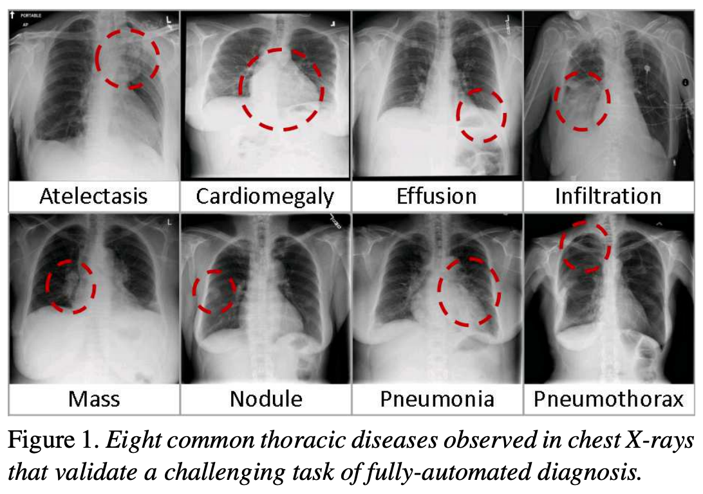
Exercise
- What are some possible challenges when working with real chest X-ray
data?
Think about issues related to the data itself (e.g. image quality, labels), as well as how the data might be used in a clinical or machine learning setting.
- Possible challenges include:
- Label noise: Labels are often derived from radiology reports using automated tools, and may not be 100% accurate.
- Ambiguity in diagnosis: Even expert radiologists may disagree on the interpretation of an image.
- Variability in image quality: X-rays may be over- or under-exposed, blurry, or taken from non-standard angles.
- Presence of confounders: Images may include pacemakers, tubes, or other devices that distract or bias a model.
- Data imbalance: In real-world datasets, some conditions (like pleural effusion) may be much less common than others.
- Generalization: A model trained on one dataset may not perform well on data from a different hospital or population.
These challenges highlight why data curation, domain expertise, and robust validation are critical in medical machine learning.
Pleural effusion
Thin membranes called “pleura” line the lungs and facilitate breathing. Normally there is a small amount of fluid present in the pleura, but certain conditions can cause excess build-up of fluid. This build-up is known as pleural effusion, sometimes referred to as “water on the lungs”.
Causes of pleural effusion vary widely, ranging from mild viral infections to serious conditions such as congestive heart failure and cancer. In an upright patient, fluid gathers in the lowest part of the chest, and this build up is visible to an expert.
For the remainder of this lesson, we will develop an algorithm to detect pleural effusion in chest X-rays. Specifically, using a set of chest X-rays labelled as either “normal” or “pleural effusion”, we will train a neural network to classify unseen chest X-rays into one of these classes.
Loading the dataset
The data that we are going to use for this project consists of 350 “normal” chest X-rays and 350 X-rays that are labelled as showing evidence pleural effusion. These X-rays are a subset of the public NIH ChestX-ray dataset.
Xiaosong Wang, Yifan Peng, Le Lu, Zhiyong Lu, Mohammadhadi Bagheri, Ronald Summers, ChestX-ray8: Hospital-scale Chest X-ray Database and Benchmarks on Weakly-Supervised Classification and Localization of Common Thorax Diseases, IEEE CVPR, pp. 3462-3471, 2017
Let’s begin by loading the dataset.
PYTHON
# The glob module finds all the pathnames matching a specified pattern
from glob import glob
import os
# If your dataset is compressed, unzip with:
# !unzip chest_xrays.zip
# Define folders containing images (assume we are in Desktop/src/ml-xray)
data_path = "chest_xrays"
effusion_path = os.path.join(data_path, "effusion", "*.png")
normal_path = os.path.join(data_path, "normal", "*.png")
# Create list of files
effusion_list = glob(effusion_path)
normal_list = glob(normal_path)
print('Number of cases with pleural effusion: ', len(effusion_list))
print('Number of normal cases: ', len(normal_list))OUTPUT
Number of cases with pleural effusion: 350
Number of normal cases: 350Note that glob() makes a list of the directory contents
in an unspecified order. If you want consistent results, you should use
sort(effusion_list). This is less important for our case,
since we are going to shuffle these later.
- Chest X-rays are widely used to identify lung, heart, and bone abnormalities.
- Pleural effusion is a condition where excess fluid builds up around the lungs, visible in chest X-rays.
- Large public datasets like the NIH ChestX-ray dataset enable the development of machine learning models to detect disease.
- In this lesson, we will train a neural network to classify chest X-rays as either “normal” or showing pleural effusion.
- We begin by loading a balanced dataset of labeled chest X-ray images.
Content from Visualisation
Last updated on 2026-07-01 | Edit this page
Estimated time: 60 minutes
Overview
Questions
- How does a chest X-ray with pleural effusion differ from a normal X-ray?
- How is an image represented and manipulated as a NumPy array?
- What steps are needed to prepare images for machine learning?
Objectives
- Visually compare chest X-rays with and without pleural effusion.
- Understand how images are represented as arrays in NumPy.
- Learn to load and preprocess image data for use in machine learning.
- Practice displaying image slices and understanding their pixel-level structure.
Visualising the X-rays
In the previous section, we set up a dataset comprising 700 chest X-rays. Half of the X-rays are labelled “normal” and half are labelled as “pleural effusion”. Let’s take a look at some of the images.
PYTHON
from PIL import Image
from matplotlib import pyplot as plt
import random
def plot_example(example, label, loc):
image = Image.open(example)
ax[loc].imshow(image, cmap='gray')
title = f"Class: {label}\n{example}"
ax[loc].set_title(title)
fig, ax = plt.subplots(1, 2)
fig.set_size_inches(10, 10)
# Plot a "normal" record
plot_example(random.choice(normal_list), "Normal", 0)
# Plot a record labelled with effusion
plot_example(random.choice(effusion_list), "Effusion", 1)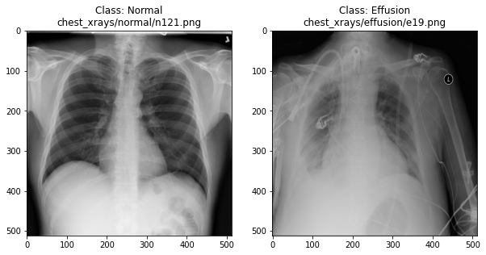
Can we detect effusion?
Run the following code to flip a coin to select an x-ray from our collection.
PYTHON
print("Effusion or not?")
# flip a coin
coin_flip = random.choice(["Effusion", "Normal"])
if coin_flip == "Normal":
fn = random.choice(normal_list)
else:
fn = random.choice(effusion_list)
# plot the image
image = Image.open(fn)
plt.imshow(image, cmap='gray')Show the answer:
PYTHON
# Jupyter doesn't allow us to print the image until the cell has run,
# so we'll print in a new cell.
print(f"The answer is: {coin_flip}!")Exercise
Use the coin-flip X-ray viewer to classify 10 chest X-rays.
- Record whether you think each image is “Normal” or “Effusion”.
- After viewing the answer, mark whether you were correct.
- Calculate your accuracy: correct predictions ÷ total predictions.
Your accuracy is the fraction of correct predictions (e.g. 6 out of
10 = 60%).
Remember the number! Later, we’ll use it as baseline for evaluating a
neural network.
How does a computer see an image?
Consider an image as a matrix in which the value of each pixel corresponds to a number that determines a tone or color. Let’s load one of our images:
PYTHON
import numpy as np
file_idx = 56
example = normal_list[file_idx]
image = np.array(Image.open(example))
print(image.shape)OUTPUT
(512, 512, 3)Here we see that the image has 3 dimensions. The first dimension is height (512 pixels) and the second is width (also 512 pixels). The presence of a third dimension indicates that we are looking at a color image. The last “RGB” index holds separate Red, Green, and Blue channels. For these images, however, R=G=B, so it doesn’t appear to have color.
For more detail on image representation in Python, take a look at the Data Carpentry course on Image Processing with Python. The following image is reproduced from the section on Image Representation.
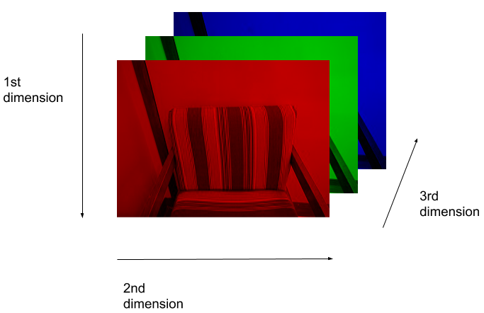
For simplicity, we’ll instead load the images in greyscale. A greyscale image has two dimensions: height and width. Greyscale images have only one channel. Most greyscale images are 8 bits per channel or 16 bits per channel. For a greyscale image with 8 bits per channel, each value in the matrix represents a tone between black (0) and white (255).
OUTPUT
(512, 512)Let’s briefly display the matrix of values, and then see how these same values are rendered as an image.
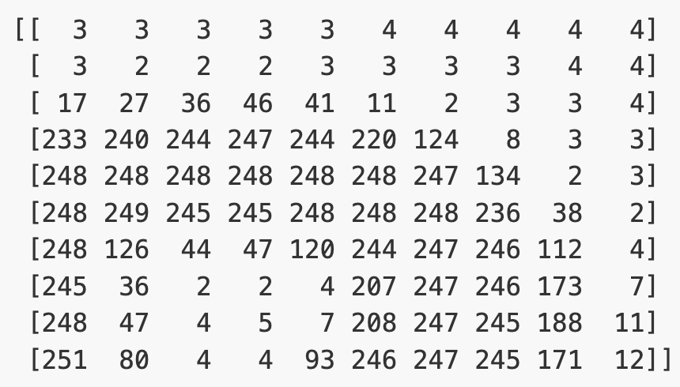
PYTHON
# Plot the same chunk as an image
plt.imshow(image[35:45, 30:40], cmap='gray', vmin=0, vmax=255)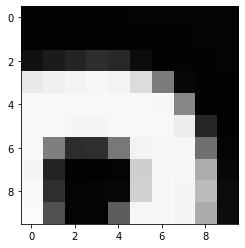
Image pre-processing
In the next section, we’ll be building and training a model. Let’s prepare our data for the modelling phase. For convenience, we’ll begin by loading all of the images and corresponding labels and assigning them to a list.
PYTHON
# create a list of effusion images and labels
dataset_effusion = [np.array(Image.open(fn).convert('L')) for fn in effusion_list]
label_effusion = np.ones(len(dataset_effusion))
# create a list of normal images and labels
dataset_normal = [np.array(Image.open(fn).convert('L')) for fn in normal_list]
label_normal = np.zeros(len(dataset_normal))
# Combine the lists
dataset = dataset_effusion + dataset_normal
labels = np.concatenate([label_effusion, label_normal])Pro Tip: the code above loads all 700 images at once. In real-world deep learning, we use Data Loaders (like torch.util.data.DataLoader) to load images from disk on-the-fly during training. This avoids the memory bottleneck of loading the entire dataset into RAM.
Downsampling
X-ray images are often high resolution, which can be useful for detailed clinical interpretation. However, for training a machine learning model, especially in an educational or prototype setting, using smaller images can reduce:
- Memory usage: smaller images require less RAM and storage.
- Computation time: smaller images train faster.
- Overfitting risk: smaller inputs reduce the number of parameters and complexity.
For these reasons, we will downsample each image from 512×512 pixels to 256×256 pixels. This still preserves important features (like fluid in the lungs) while reducing the computational cost.
PYTHON
# Downsample the images from (512,512) to (256,256)
dataset = [np.array(Image.fromarray(img).resize((256, 256))) for img in dataset]
# Check the size of the reshaped images
print(dataset[0].shape)OUTPUT
(256, 256)Standardisation
Before training a model, it’s important to scale input data. A common approach is standardization, which adjusts the pixel values so that each image has zero mean and unit variance. This helps neural networks learn more effectively by ensuring that the input data is centered and scaled.
PYTHON
# Standardize the data
# For each image: subtract the mean and divide by the standard deviation
for i in range(len(dataset)):
dataset[i] = (dataset[i] - np.mean(dataset[i])) / np.std(dataset[i])Note that this standardizes each image individually, so that the
image mean is now zero for every image. If we had standardized
the entire dataset, there would still be variations in
dataset[i].mean().
Reshaping
Finally, we’ll convert our dataset from a list to an array. We are expecting it to be (700, 256, 256), representing 700 images (350 effusion and 350 normal), each with dimensions 256×256.
OUTPUT
(700, 256, 256)Exercise
Pick any grayscale image from your dataset (hint:
dataset[idx]) and inspect the following:
- What is the new shape of the image array?
- What are the mean and standard deviation of the pixel values?
- Shape after resizing:
dataset[0].shape(256, 256) - The mean is 0 (
dataset[0].mean()) and the standard deviation is 1 (dataset[0].std())
We could plot the images by indexing them on dataset,
e.g., we can plot the first image in the dataset with:
PYTHON
idx = 0
vals = dataset[idx].flatten()
plt.imshow(dataset[idx], cmap='gray', vmin=min(vals), vmax=max(vals))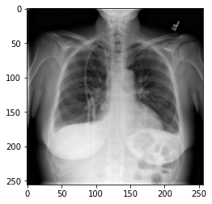
Note that vmin and vmax are used because our images are no longer on a 0-255 scale, but have values centered around zero. Without specifying these, matplotlib auto-scales.
- X-ray images can be loaded and visualized using Python libraries like Pillow and NumPy.
- Images are stored as 2D arrays (grayscale) or 3D arrays (RGB).
- Visual inspection helps us understand how disease features appear in imaging data.
- Preprocessing steps like resizing and standardization prepare data for machine learning.
Content from Data preparation
Last updated on 2026-06-17 | Edit this page
Estimated time: 60 minutes
Overview
Questions
- Why do we divide data into training, validation, and test sets?
- What is data augmentation, and why is it useful for small datasets?
- How can random transformations help improve model performance?
Objectives
- Split the dataset into training, validation, and test sets.
- Prepare image and label arrays in the format expected by PyTorch.
- Apply basic image augmentation to increase training data diversity.
- Understand the role of data preprocessing in model generalization.
Partitioning the dataset
Before training our model, we must split the dataset into three subsets:
- Training set: Used to train the model.
- Validation set: Used to tune parameters and monitor for overfitting.
- Test set: Used for final performance evaluation.
This separation helps ensure that our model generalizes to new, unseen data.
To ensure reproducibility, we set a random_state, which
controls the random number generator and guarantees the same split every
time we run the code.
PyTorch expects image input in the format:
[batch_size, channels, height, width]
So we’ll also expand our image and label arrays to include the channel dimension at the start (grayscale images have 1 channel).
PYTHON
from sklearn.model_selection import train_test_split
# Reshape arrays to include a channel dimension:
# [height, width] → [1, height, width]
dataset_expanded = dataset[:, np.newaxis, :, :]
labels_expanded = labels[..., np.newaxis]
# Create training and test sets (85% train, 15% test)
dataset_train, dataset_test, labels_train, labels_test = train_test_split(
dataset_expanded, labels_expanded, test_size=0.15, random_state=42)
# Further split training set to create validation set (15% of remaining data)
dataset_train, dataset_val, labels_train, labels_val = train_test_split(
dataset_train, labels_train, test_size=0.15, random_state=42)
print("No. images, channels, x_dim, y_dim) (No. labels, 1)\n")
print(f"Train: {dataset_train.shape}, {labels_train.shape}")
print(f"Validation: {dataset_val.shape}, {labels_val.shape}")
print(f"Test: {dataset_test.shape}, {labels_test.shape}")OUTPUT
No. images, channels, x_dim, y_dim) (No. labels, 1)
Train: (505, 1, 256, 256), (505, 1)
Validation: (90, 1, 256, 256), (90, 1)
Test: (105, 1, 256, 256), (105, 1)Data Augmentation
Our dataset is small, which increases the risk of overfitting, when a model learns patterns specific to the training set but performs poorly on new data.
Data augmentation helps address this by creating modified versions of the training images on-the-fly using random transformations. This teaches the model to become more robust to variations it might encounter in real-world data.
We can use torchvision.transforms.v2 to define the types
of augmentation to apply.
PYTHON
from torchvision.transforms import v2
# Define what kind of transformations we would like to apply
# such as rotation, crop, zoom, position shift, etc
datagen = v2.Compose([
v2.RandomRotation(degrees=0),
v2.RandomAffine(degrees=0, translate=(0, 0), scale=(1.0, 1.0)),
v2.RandomHorizontalFlip(p=0.0)
])Exercise
- Modify the
datagenpipeline to include one or more of the following:
v2.RandomRotation(degrees=20)v2.RandomResizedCrop(size=(256, 256), scale=(0.8, 1.0))v2.RandomHorizontalFlip(p=0.5)
Now let’s view the effect on our X-rays!:
PYTHON
# specify path to source data
path = os.path.join("chest_xrays")
batch_size=5
# For visualization, we'll manually apply the transforms to a few images
import torch
from PIL import Image
def plot_images(images_arr):
fig, axes = plt.subplots(1, 5, figsize=(20,20))
axes = axes.flatten()
for img, ax in zip(images_arr, axes):
# Convert tensor back to numpy for plotting
img_np = img.squeeze().numpy()
ax.imshow(img_np, cmap='gray')
plt.tight_layout()
sample_images = [Image.open(random.choice(effusion_list)).convert('L') for _ in range(batch_size)]
augmented_images = [datagen(torchvision.transforms.v2.functional.to_image(img)) for img in sample_images]
plot_images(augmented_images)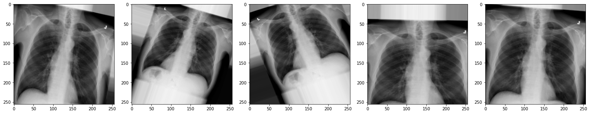
Exercise
- How do the new augmentations affect the appearance of the
X-rays?
Can you still tell they are chest X-rays?
- The augmented images may appear rotated, zoomed, or flipped.
While they might look distorted, they remain visually recognizable as chest X-rays. These augmentations help the model generalize better to real-world variability.
In medical imaging, always consider clinical context. Some transformations, like left-right flipping, could lead to anatomically incorrect inputs if not handled carefully.
Now we have some data to work with, let’s start building our model.
- Data should be split into separate sets for training, validation, and testing to fairly evaluate model performance.
- PyTorch expects input images in the shape (batch, channels, height, width).
- Data augmentation increases the variety of training data by applying random transformations.
- Augmented images help reduce overfitting and improve generalization to new data.
Content from Neural networks
Last updated on 2026-06-17 | Edit this page
Estimated time: 60 minutes
Overview
Questions
- What is a neural network and how is it structured?
- What role do activation functions play in learning?
- What is the difference between dense and convolutional layers?
- Why are convolutional neural networks effective for image classification?
Objectives
- Understand the structure and components of a neural network.
- Identify the purpose of activation functions and dense layers.
- Explain how convolutional layers extract features from images.
- Construct a convolutional neural network using PyTorch.
What is a neural network?
An artificial neural network, or just “neural network”, is a broad term that describes a family of machine learning models that are (very!) loosely based on the neural circuits found in biology.
The smallest building block of a neural network is a single neuron. A typical neuron receives inputs (x1, x2, x3) which are multiplied by learnable weights (w1, w2, w3), then summed with a bias term (b). An activation function (f) determines the neuron output.
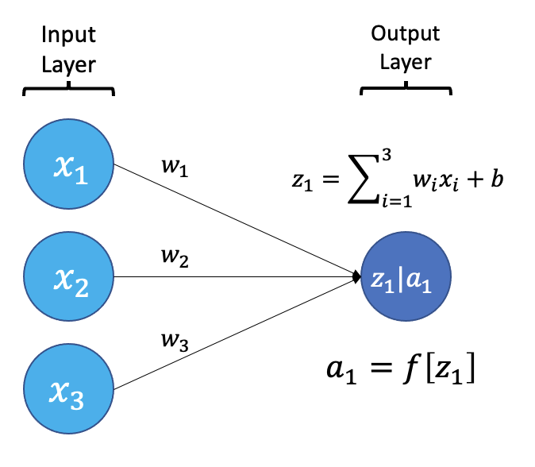
From a high level, a neural network is a system that takes input values in an “input layer”, processes these values with a collection of functions in one or more “hidden layers”, and then generates an output such as a prediction. The network has parameters that are systematically tweaked to allow pattern recognition.
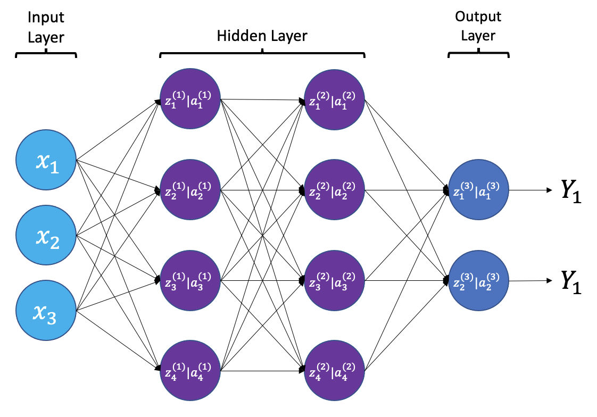
The layers shown in the network above are “dense” or “fully connected”. Each neuron is connected to all neurons in the preceeding layer. Dense layers are a common building block in neural network architectures.
“Deep learning” is an increasingly popular term used to describe certain types of neural network. When people talk about deep learning they are typically referring to more complex network designs, often with a large number of hidden layers.
Activation Functions
Part of the concept of a neural network is that each neuron can either be ‘active’ or ‘inactive’. This notion of activity and inactivity is attempted to be replicated by so called activation functions. The original activation function was the sigmoid function (related to its use in logistic regression). This would make each neuron’s activation some number between 0 and 1, with the idea that 0 was ‘inactive’ and 1 was ‘active’.
As time went on, different activation functions were used. For example the tanh function (hyperbolic tangent function), where the idea is a neuron can be active in both a positive capacity (close to 1), a negative capacity (close to -1) or can be inactive (close to 0).
The problem with both of these is that they suffered from a problem called model saturation. This is where very high or very low values are put into the activation function, where the gradient of the line is almost flat. This leads to very slow learning rates (it can take a long time to train models with these activation functions).
One popular activation function that tries to tackle this is the rectified linear unit (ReLU) function. This has 0 if the input is negative (inactive) and just gives back the input if it is positive (a measure of how active it is - the metaphor gets rather stretched here). This is much faster at training and gives very good performance, but still suffers model saturation on the negative side. Researchers have tried to get round this with functions like ‘leaky’ ReLU, where instead of returning 0, negative inputs are multiplied by a very small number.
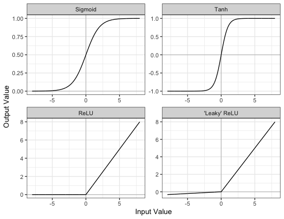
Convolutional neural networks
Convolutional neural networks (CNNs) are a type of neural network that especially popular for vision tasks such as image recognition. CNNs are very similar to ordinary neural networks, but they have characteristics that make them well suited to image processing.
Just like other neural networks, a CNN typically consists of an input layer, hidden layers and an output layer. The layers of “neurons” have learnable weights and biases, just like other networks.
What makes CNNs special? The name stems from the fact that the architecture includes one or more convolutional layers. These layers apply a mathematical operation called a “convolution” to extract features from arrays such as images.
In a convolutional layer, a matrix of values referred to as a “filter” or “kernel” slides across the input matrix (in our case, an image). As it slides, values are multiplied to generate a new set of values referred to as a “feature map” or “activation map”.

Filters provide a mechanism for emphasising aspects of an input image. For example, a filter may emphasise object edges. See setosa.io for a visual demonstration of the effect of different filters.
Max pooling
Convolutional layers often produce large feature maps — one for each filter. To reduce the size of these maps while retaining the most important features, we use pooling.
The most common type is max pooling. It works by sliding a small window (often 2×2) across the feature map and taking the maximum value in each region. This reduces the resolution of the feature map (for a 2x2 window by a factor of 2) while keeping the strongest responses.
For example, if we apply max pooling to the following 4×4 matrix:
[1, 3, 2, 1],
[5, 6, 1, 2],
[4, 2, 9, 8],
[3, 1, 2, 0]We get this 2×2 output:
[6, 2],
[4, 9]Each value in the output is the maximum from a 2×2 window in the input.
Why use max pooling?
- Reduces computation by shrinking the feature maps
- Adds translation tolerance — the model is less sensitive to small shifts in the image
- Keeps the strongest features while discarding low-importance details
In PyTorch, max pooling is implemented with the
nn.MaxPool2d() layer. You’ll see it applied multiple times
in our network to gradually reduce the size of the feature maps and
focus on the most prominent features.
Dropout
When training neural networks, a common problem is overfitting — the model learns to perform very well on the training data but fails to generalize to new, unseen examples.
Dropout is a regularization technique that helps reduce overfitting. During training, dropout temporarily “drops out” (sets to zero) a random subset of neurons in a layer. This forces the network to learn redundant representations and prevents it from becoming too reliant on any single path through the network.
In practice:
- During training: a random set of neurons is deactivated at each step.
- During inference (prediction), all neurons are used, and the outputs are scaled accordingly.
For example:
PYTHON
from torch import nn
x = nn.Linear(128) # Example dense layer
# Drop 50% of neurons during training
x = nn.Dropout(0.5)(x)The value 0.5 is the dropout rate — the fraction of neurons to disable.
Challenge
- Why is dropout helpful during training?
- What effect do you expect from reducing or removing the dropout rate during training?
Dropout randomly disables neurons during training, forcing the network to not rely too heavily on any one path. This helps prevent overfitting and improves generalization.
With lower or no dropout, training accuracy may rise faster, but validation accuracy may stagnate or decline, indicating overfitting.
Creating a convolutional neural network
Before training a convolutional neural network, we will first define its architecture. The architecture we use in this lesson is intentionally simple. It follows common CNN design principles:
- Repeated use of small convolutional filters (3×3 or 5×5)
- Max pooling to reduce dimensionality
- Fully connected layers at the end for classification
This architecture is loosely inspired by classic CNNs such as LeNet-5 and VGGNet. It strikes a balance between performance and clarity. It’s small enough to train on a CPU, but expressive enough to learn meaningful features from medical images.
More complex architectures (like DenseNet) are used in real-world medical imaging applications. But for a small dataset and classroom setting, our custom architecture is ideal for learning.
To make this process modular and reusable, we’ll write a class called
ChestXRayNet using PyTorch.
PYTHON
import torch
from torch import nn
class ChestXRayNet(nn.Module):
def __init__(self, dropout_rate=0.6):
super(ChestXRayNet, self).__init__()
# First convolutional block: 8 filters (3x3), followed by max pooling
self.conv1 = nn.Conv2d(1, 8, kernel_size=3, padding=1)
self.pool1 = nn.MaxPool2d(2)
# Second convolutional block
self.conv2 = nn.Conv2d(8, 8, kernel_size=3, padding=1)
self.pool2 = nn.MaxPool2d(2)
# Third and fourth blocks: 12 filters
self.conv3 = nn.Conv2d(8, 12, kernel_size=3, padding=1)
self.pool3 = nn.MaxPool2d(2)
self.conv4 = nn.Conv2d(12, 12, kernel_size=3, padding=1)
self.pool4 = nn.MaxPool2d(2)
# Fifth and sixth blocks: 20 filters, 5x5 kernel
self.conv5 = nn.Conv2d(12, 20, kernel_size=5, padding=2)
self.pool5 = nn.MaxPool2d(2)
self.conv6 = nn.Conv2d(20, 20, kernel_size=5, padding=2)
self.pool6 = nn.MaxPool2d(2)
# Final convolutional layer with 50 filters
self.conv7 = nn.Conv2d(20, 50, kernel_size=5, padding=2)
# Global average pooling reduces each feature map to a single value
self.gap = nn.AdaptiveAvgPool2d(1)
# Dense (fully connected) layers for classification
self.fc1 = nn.Linear(50, 128)
self.dropout = nn.Dropout(dropout_rate)
self.fc2 = nn.Linear(128, 32)
self.fc3 = nn.Linear(32, 1)
self.relu = nn.ReLU()
self.sigmoid = nn.Sigmoid()
def forward(self, x):
# Conv blocks
x = self.pool1(self.relu(self.conv1(x)))
x = self.pool2(self.relu(self.conv2(x)))
x = self.pool3(self.relu(self.conv3(x)))
x = self.pool4(self.relu(self.conv4(x)))
x = self.pool5(self.relu(self.conv5(x)))
x = self.pool6(self.relu(self.conv6(x)))
# Final conv and GAP
x = self.relu(self.conv7(x))
x = self.gap(x)
x = torch.flatten(x, 1)
# Dense layers
x = self.relu(self.fc1(x))
x = self.dropout(x)
x = self.relu(self.fc2(x))
x = self.sigmoid(self.fc3(x))
return x
# Create the model
model = ChestXRayNet(dropout_rate=0.6)Exercise
- What is the purpose of using multiple convolutional layers in a
neural network?
- What would happen if you skipped the pooling layers entirely?
Stacking convolutional layers allows the network to learn increasingly abstract features — early layers detect edges and textures, while later layers detect shapes or patterns.
Skipping pooling layers means the model retains high-resolution spatial information, but it increases computational cost and can lead to overfitting.
Now let’s build the model and view its architecture:
PYTHON
import torch
# Set the seed for reproducibility
torch.manual_seed(42)
# Create the model
model = ChestXRayNet(dropout_rate=0.6)
# View the model architecture
print(model)OUTPUT
ChestXRayNet(
(conv1): Conv2d(1, 8, kernel_size=(3, 3), stride=(1, 1), padding=(1, 1))
(pool1): MaxPool2d(kernel_size=2, stride=2, padding=0, dilation=1, ceil_mode=False)
(conv2): Conv2d(8, 8, kernel_size=(3, 3), stride=(1, 1), padding=(1, 1))
(pool2): MaxPool2d(kernel_size=2, stride=2, padding=0, dilation=1, ceil_mode=False)
(conv3): Conv2d(8, 12, kernel_size=(3, 3), stride=(1, 1), padding=(1, 1))
(pool3): MaxPool2d(kernel_size=2, stride=2, padding=0, dilation=1, ceil_mode=False)
(conv4): Conv2d(12, 12, kernel_size=(3, 3), stride=(1, 1), padding=(1, 1))
(pool4): MaxPool2d(kernel_size=2, stride=2, padding=0, dilation=1, ceil_mode=False)
(conv5): Conv2d(12, 20, kernel_size=(5, 5), stride=(1, 1), padding=(2, 2))
(pool5): MaxPool2d(kernel_size=2, stride=2, padding=0, dilation=1, ceil_mode=False)
(conv6): Conv2d(20, 20, kernel_size=(5, 5), stride=(1, 1), padding=(2, 2))
(pool6): MaxPool2d(kernel_size=2, stride=2, padding=0, dilation=1, ceil_mode=False)
(conv7): Conv2d(20, 50, kernel_size=(5, 5), stride=(1, 1), padding=(2, 2))
(gap): AdaptiveAvgPool2d(output_size=1)
(fc1): Linear(in_features=50, out_features=128, bias=True)
(dropout): Dropout(p=0.6, inplace=False)
(fc2): Linear(in_features=128, out_features=32, bias=True)
(fc3): Linear(in_features=32, out_features=1, bias=True)
(relu): ReLU()
(sigmoid): Sigmoid()
)Exercise
Increase the number of filters in the first convolutional layer from 8 to 16.
- How does this affect the number of parameters in the model?
- What effect do you expect this change to have on the model’s learning capacity?
In the ChestXRayNet class, locate this line in
__init__:
Change it to:
This increases the number of filters (feature detectors), and therefore increases the number of learnable parameters. The model may be able to capture more features, improving learning, but it also risks overfitting and will take longer to train.
- Neural networks are composed of layers of neurons that transform inputs into outputs through learnable parameters.
- Activation functions introduce non-linearity and help neural networks learn complex patterns.
- Dense (fully connected) layers connect every neuron from one layer to the next and are commonly used in classification tasks.
- Convolutional layers apply filters to extract spatial features from images and are the core of convolutional neural networks (CNNs).
- Dropout helps reduce overfitting by randomly disabling neurons during training.
Content from Training and evaluation
Last updated on 2026-06-30 | Edit this page
Estimated time: 60 minutes
Overview
Questions
- How is a neural network trained to make better predictions?
- What do training loss and accuracy tell us?
- How do we evaluate a model’s performance on unseen data?
Objectives
- Compile a neural network with a suitable loss function and optimizer.
- Train a convolutional neural network using batches of data.
- Monitor model performance during training using training and validation loss and accuracy.
- Evaluate a trained model on a held-out test set.
Compile and train your model
Now that we’ve defined the architecture of our neural network, the next step is to compile and train it.
What does “compiling” a model mean?
In PyTorch, we don’t “compile” a model in the same way as Keras. Instead, we explicitly define:
- A loss function, which measures the difference between the model’s predictions and the actual labels.
- An optimizer, such as gradient descent, which adjusts the model’s internal weights to minimize the loss.
- Metrics, such as accuracy, which we calculate manually during the training loop.
What happens during training?
Training is the process of finding the best set of weights to minimize the loss. This is done by:
- Making predictions on a batch of training data.
- Comparing those predictions to the true labels using the loss function.
- Adjusting the weights to reduce the error, using the optimizer.
What are batch size, steps per epoch, and epochs?
- Batch size is the number of training examples processed together
before updating the model’s weights.
- Smaller batch sizes use less memory and may generalize better but take longer to train.
- Larger batch sizes make faster progress per step but may require more memory and can sometimes overfit.
- Steps per epoch defines how many batches the model processes in one
epoch. A typical setting is:
steps_per_epoch = len(dataset_train) // batch_size - Epochs refers to how many times the model sees the entire training dataset.
Choosing these parameters is a tradeoff between speed, memory usage, and performance. You can experiment to find values that work best for your data and hardware.
PYTHON
import time
import torch
import torch.nn as nn
import torch.optim as optim
from torch.utils.data import DataLoader, TensorDataset
# Define the loss function and optimizer
# BCEWithLogitsLoss is used for binary classification
criterion = nn.BCELoss()
optimizer = optim.Adam(model.parameters())
# Prepare data loaders
train_ds = TensorDataset(torch.tensor(dataset_train, dtype=torch.float32), torch.tensor(labels_train, dtype=torch.float32))
val_ds = TensorDataset(torch.tensor(dataset_val, dtype=torch.float32), torch.tensor(labels_val, dtype=torch.float32))
train_loader = DataLoader(train_ds, batch_size=16, shuffle=True)
val_loader = DataLoader(val_ds, batch_size=16)
# Training parameters
epochs = 10
best_val_loss = float('inf')
# Start the timer
start_time = time.time()
# Training loop
train_losses, val_losses = [], []
train_accs, val_accs = [], []
for epoch in range(epochs):
model.train()
running_loss, correct, total = 0.0, 0, 0
for inputs, labels in train_loader:
optimizer.zero_grad()
outputs = model(inputs).squeeze()
loss = criterion(outputs, labels.squeeze())
loss.backward()
optimizer.step()
running_loss += loss.item()
predicted = (outputs > 0.5).float()
correct += (predicted == labels.squeeze()).sum().item()
total += labels.size(0)
epoch_loss = running_loss / len(train_loader)
epoch_acc = correct / total
train_losses.append(epoch_loss)
train_accs.append(epoch_acc)
# Validation
model.eval()
val_running_loss, val_correct, val_total = 0.0, 0, 0
with torch.no_grad():
for inputs, labels in val_loader:
outputs = model(inputs).squeeze()
loss = criterion(outputs, labels.squeeze())
val_running_loss += loss.item()
predicted = (outputs > 0.5).float()
val_correct += (predicted == labels.squeeze()).sum().item()
val_total += labels.size(0)
val_loss = val_running_loss / len(val_loader)
val_acc = val_correct / val_total
val_losses.append(val_loss)
val_accs.append(val_acc)
if val_loss < best_val_loss:
best_val_loss = val_loss
torch.save(model.state_dict(), 'best_model.pt')
print(f"Epoch {epoch+1}/{epochs} - loss: {epoch_loss:.3f} - acc: {epoch_acc:.3f} - val_loss: {val_loss:.3f} - val_acc: {val_acc:.3f}")
# End the timer
end_time = time.time()
elapsed_time = end_time - start_time
print(f"Training completed in {elapsed_time:.2f} seconds.")We can now plot the results of the training. “Loss” should drop over successive epochs and accuracy should increase.
PYTHON
plt.plot(train_losses, 'b-', label='train loss')
plt.plot(val_losses, 'r-', label='val loss')
plt.ylabel('Loss')
plt.xlabel('Epoch')
plt.legend(loc='lower right')
plt.show()
plt.plot(train_accs, 'b-', label='train accuracy')
plt.plot(val_accs, 'r-', label='val accuracy')
plt.ylabel('Accuracy')
plt.xlabel('Epoch')
plt.legend(loc='lower right')
plt.show()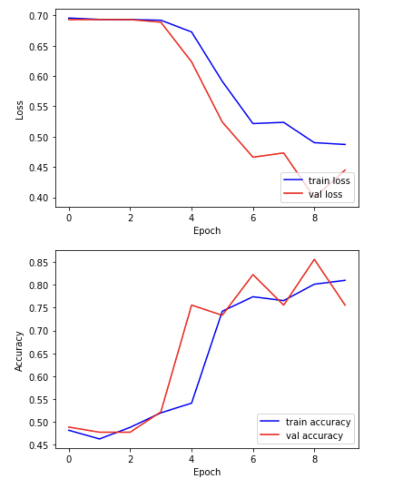
Exercise
Examine the training and validation curves.
- What does it mean if the training loss continues to decrease, but
the validation loss starts increasing?
- Suggest two actions you could take to reduce overfitting in this
situation.
- Bonus: Try increasing the dropout rate in your model. What happens to the validation accuracy?
If the training loss decreases while the validation loss increases, the model is overfitting — it’s learning the training data too well and struggling to generalize to unseen data.
You could:
- Increase regularization (e.g. by raising the dropout rate)
- Add more training data
- Use data augmentation
- Simplify the model to reduce capacity
- Increasing dropout may lower performance slightly but improve generalization. Always compare the training and validation accuracy/loss to decide.
Batch normalization
Batch normalization is a technique that standardizes the output of a layer across each training batch. This helps stabilize and speed up training.
It works by:
- Subtracting the batch mean
- Dividing by the batch standard deviation
- Applying a learnable scale and shift
You typically insert BatchNormalization() after a
convolutional or dense layer, and before the activation function:
Benefits can include:
- Faster training
- Reduced sensitivity to weight initialization
- Helps prevent overfitting
Challenge
- Try inserting a BatchNormalization() layer after the first convolutional layer in your model, and re-run the training. Compare:
- Training time
- Accuracy
- Validation performance
What changes do you notice?
- Adding batch normalization can improve training stability and accuracy. Find this line in your model:
Split it into two lines, and insert BatchNormalization()
before the activation:
PYTHON
x = nn.Conv2d(1, 8, kernel_size=3, padding=1)(inputs)
x = nn.BatchNorm2d(8)(x)
x = nn.ReLU()(x)You may notice:
- Smoother training curves
- Higher validation accuracy
- Slightly faster convergence
Remember to retrain your model after making this change.
Choosing and modifying the architecture
There is no single “correct” architecture for a neural network. The best design depends on your data, task, and computational constraints. Here is a systematic approach to designing and improving your model architecture:
Start simple
Begin with a basic model and verify that it can learn from your data. It is better to get a simple model working than to over-complicate things early.
Use proven patterns
Borrow ideas from successful models:
- LeNet-5: good for small grayscale images.
- VGG: uses repeated 3×3 convolutions and pooling.
- ResNet or DenseNet: useful for deep networks with skip connections.
Tune hyperparameters systematically
To improve performance in a structured way, try:
- Manual tuning: Change one variable at a time (e.g., number of filters, dropout rate) and observe its effect on validation performance.
- Grid search: Define a grid of parameters (e.g., filter sizes, learning rates, dropout values) and test all combinations. This is slow but thorough.
- Automated tuning: Use tools like Optuna to automate the search for the best architecture.
Evaluating your model on the held-out test set
In this step, we present the unseen test dataset to our trained network and evaluate the performance.
PYTHON
# Load the best model saved during training
model = ChestXRayNet()
model.load_state_dict(torch.load('best_model.pt'))
model.eval()
print('\nNeural network weights updated to the best epoch.')Now that we’ve loaded the best model, we can evaluate the accuracy on our test data.
PYTHON
# Evaluate the accuracy on our test data
model.eval()
with torch.no_grad():
test_ds = TensorDataset(torch.tensor(dataset_test, dtype=torch.float32), torch.tensor(labels_test, dtype=torch.float32))
test_loader = DataLoader(test_ds, batch_size=16)
correct, total = 0, 0
for inputs, labels in test_loader:
outputs = model(inputs).squeeze()
predicted = (outputs > 0.5).float()
correct += (predicted == labels.squeeze()).sum().item()
total += labels.size(0)
print(f"Accuracy in test group: {correct / total:.2f}")OUTPUT
Accuracy in test group: 0.80- Neural networks are trained by adjusting weights to minimize a loss function using optimization algorithms like Adam.
- Training is done in batches over multiple epochs to gradually improve performance.
- Validation data helps detect overfitting and track generalization during training.
- The best model can be selected by monitoring validation loss and saved for future use.
- Final performance should be evaluated on a separate test set that the model has not seen during training.
Content from Explainability
Last updated on 2026-07-01 | Edit this page
Estimated time: 60 minutes
Overview
Questions
- What is a saliency map, and how is it used to explain model predictions?
- How do different explainability methods (e.g., GradCAM++ vs. ScoreCAM) compare?
- What are the limitations of saliency maps in practice?
Objectives
- Understand how saliency maps highlight regions that influence model predictions.
- Generate saliency maps using GradCAM++ and ScoreCAM.
- Compare explainability methods and assess their reliability.
- Reflect on the strengths and limitations of visual explanation techniques.
Explainability
If a model is making a prediction, many of us would like to know how the decision was reached. Saliency maps - and related approaches - are a popular form of explainability for imaging models.
Saliency maps use color to illustrate the extent to which a region of an image contributes to a given decision. Let’s plot some saliency maps for our model:
PYTHON
# !uv pip install captum
from matplotlib import cm
import numpy as np
from matplotlib import pyplot as plt
from captum.attr import LayerGradCam
# Select an explainability algorithm
# We use LayerGradCam from the Captum library
lgc = LayerGradCam(model, model.conv7)
def plot_map(cam, classe, prediction, img):
"""
Plot the image.
"""
fig, axes = plt.subplots(1,2, figsize=(14, 5))
axes[0].imshow(np.squeeze(img), cmap='gray')
axes[1].imshow(np.squeeze(img), cmap='gray')
# Use Captum's built-in interpolation to upscale the 4x4 map to 256x256
# cam must be a torch tensor for lgc.interpolate
if isinstance(cam, np.ndarray):
cam_tensor = torch.from_numpy(cam)
else:
cam_tensor = cam
cam_interpolated = lgc.interpolate(cam_tensor, (256, 256))
cam_agg = np.squeeze(cam_interpolated.detach().cpu().numpy())
# Normalize to [0, 1]
cam_min, cam_max = cam_agg.min(), cam_agg.max()
if cam_max > cam_min:
cam_norm = (cam_agg - cam_min) / (cam_max - cam_min)
else:
cam_norm = cam_agg
heatmap = np.uint8(cm.jet(cam_norm)[..., :3] * 255)
# TODO: try plotting cam_agg directly. Is manual normalization needed?
# Note: alpha sets partial transparency
i = axes[1].imshow(heatmap, cmap="jet", alpha=0.5)
fig.colorbar(i)
plt.suptitle("Class: {}. Pred = {:.3f}".format(classe, prediction))
#plt.savefig(f"saliency_{random.randint(0,10000)}.png")
#plt.close()
# Plot each image with accompanying saliency map
for image_id in range(10):
SEED_INPUT = torch.tensor(dataset_test[image_id], dtype=torch.float32).unsqueeze(0)
# Generate attribution
# We target the output for the 'effusion' class (index 0 in binary)
cam = lgc.attribute(SEED_INPUT, target=0)
cam = cam.detach().cpu().numpy()
# Display the class
_class = 'normal' if labels_test[image_id] == 0 else 'effusion'
model.eval()
with torch.no_grad():
_prediction = model(SEED_INPUT).item()
plot_map(cam, _class, _prediction, SEED_INPUT)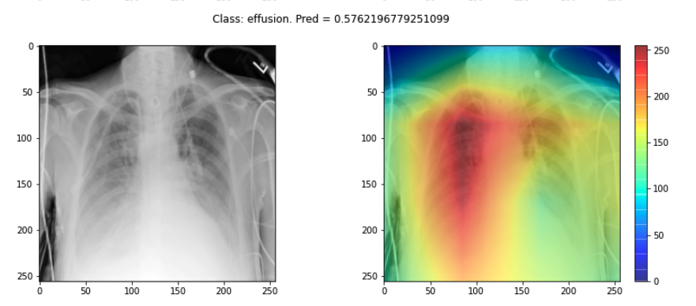
Challenge
- Choose three saliency maps from your outputs and describe:
- Where the model focused its attention
- Whether this attention seems clinically meaningful
- Any surprising or questionable results
Discuss with a partner: does the model seem to be making decisions for the right reasons?
- You may find that some maps highlight areas around the lungs, suggesting the model is learning useful clinical features. Other maps might focus on irrelevant regions (e.g., borders or artifacts), which could suggest model overfitting or dataset biases.
Interpreting these results requires domain knowledge and critical thinking. This exercise is designed to foster discussion rather than provide a single right answer.
Sanity checks for saliency maps
While saliency maps may offer us interesting insights about regions of an image contributing to a model’s output, there are suggestions that this kind of visual assessment can be misleading. For example, the following abstract is from a paper entitled “Sanity Checks for Saliency Maps”:
Saliency methods have emerged as a popular tool to highlight features in an input deemed relevant for the prediction of a learned model. Several saliency methods have been proposed, often guided by visual appeal on image data. … Through extensive experiments we show that some existing saliency methods are independent both of the model and of the data generating process. Consequently, methods that fail the proposed tests are inadequate for tasks that are sensitive to either data or model, such as, finding outliers in the data, explaining the relationship between inputs and outputs that the model learned, and debugging the model.
There are multiple methods for producing saliency maps to explain how a particular model is making predictions. In PyTorch, the Captum library provides several implementations, including LayerGradCam and Integrated Gradients. Use this code to compare a GradCAM-based approach with a different attribution method.
PYTHON
from captum.attr import LayerGradCam, IntegratedGradients
# Initialize two different explainability algorithms
lgc = LayerGradCam(model, model.conv7)
ig = IntegratedGradients(model)
def plot_map2(cam1, cam2, classe, prediction, img):
"""
Plot the image.
"""
fig, axes = plt.subplots(1, 3, figsize=(14, 5))
axes[0].imshow(np.squeeze(img), cmap='gray')
axes[1].imshow(np.squeeze(img), cmap='gray')
axes[2].imshow(np.squeeze(img), cmap='gray')
# Process cam1 (GradCAM) - Interpolate to match input size
if isinstance(cam1, np.ndarray):
cam1_tensor = torch.from_numpy(cam1)
else:
cam1_tensor = cam1
cam1_interpolated = lgc.interpolate(cam1_tensor, (256, 256))
cam1_agg = np.squeeze(cam1_interpolated.detach().cpu().numpy())
c1_min, c1_max = cam1_agg.min(), cam1_agg.max()
cam1_norm = (cam1_agg - c1_min) / (c1_max - c1_min) if c1_max > c1_min else cam1_agg
heatmap1 = np.uint8(cm.jet(cam1_norm)[..., :3] * 255)
# Process cam2 (Integrated Gradients) - Already full size
cam2_agg = np.squeeze(cam2)
if len(cam2_agg.shape) == 3:
cam2_agg = np.mean(cam2_agg, axis=0)
c2_min, c2_max = cam2_agg.min(), cam2_agg.max()
cam2_norm = (cam2_agg - c2_min) / (c2_max - c2_min) if c2_max > c2_min else cam2_agg
heatmap2 = np.uint8(cm.jet(cam2_norm)[..., :3] * 255)
i = axes[1].imshow(heatmap1, cmap="jet", alpha=0.5)
j = axes[2].imshow(heatmap2, cmap="jet", alpha=0.5)
fig.colorbar(i)
plt.suptitle("Class: {}. Pred = {:.3f}".format(classe, prediction))
model.eval()
# Plot each image with accompanying saliency map
for image_id in range(10):
SEED_INPUT = torch.tensor(dataset_test[image_id], dtype=torch.float32).unsqueeze(0)
# Attribution 1: LayerGradCam
cam1 = lgc.attribute(SEED_INPUT, target=0).detach().cpu().numpy()
# Attribution 2: Integrated Gradients
cam2 = ig.attribute(SEED_INPUT, target=0).detach().cpu().numpy()
# IG produces a map the size of the input; we average over channels for visualization
cam2 = np.mean(cam2, axis=1)
# Display the class
_class = 'normal' if labels_test[image_id] == 0 else 'effusion'
with torch.no_grad():
_prediction = model(SEED_INPUT).item()
plot_map2(cam1, cam2, _class, _prediction, SEED_INPUT)Some of the time these methods largely agree:
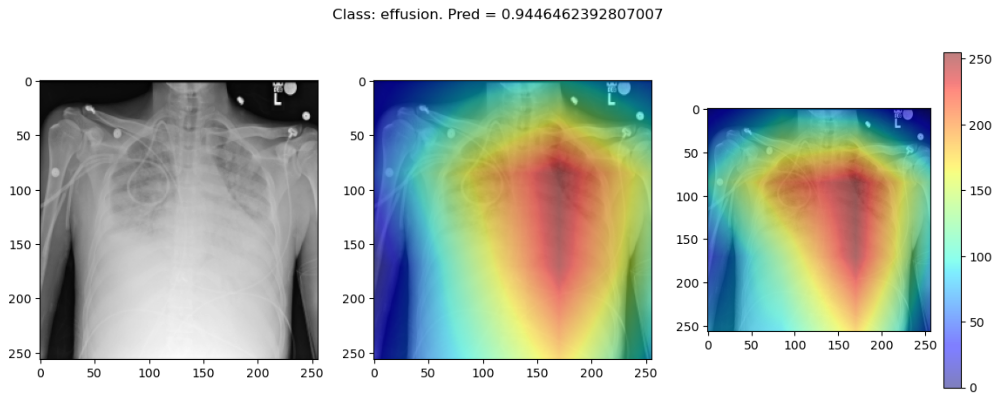
But some of the time they disagree wildly:
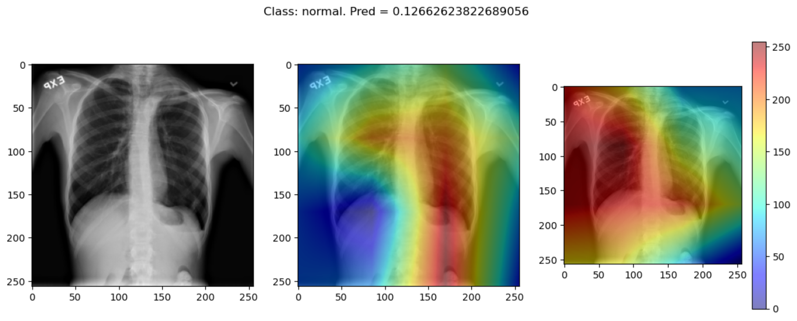
This raises the question, should these algorithms be used at all?
This is part of a larger problem with explainability of complex models in machine learning. The generally accepted answer is to know how your model works and to know how your explainability algorithm works as well as to understand your data.
With these three pieces of knowledge it should be possible to identify algorithms appropriate for your task, and to understand any shortcomings in their approaches.
- Saliency maps visualize which parts of an image contribute most to a model’s prediction.
- GradCAM and Integrated Gradients are commonly used techniques for generating saliency maps in convolutional models.
- Saliency maps can help build trust in a model, but they may not always reflect true model behavior.
- Explainability methods should be interpreted cautiously and validated carefully.